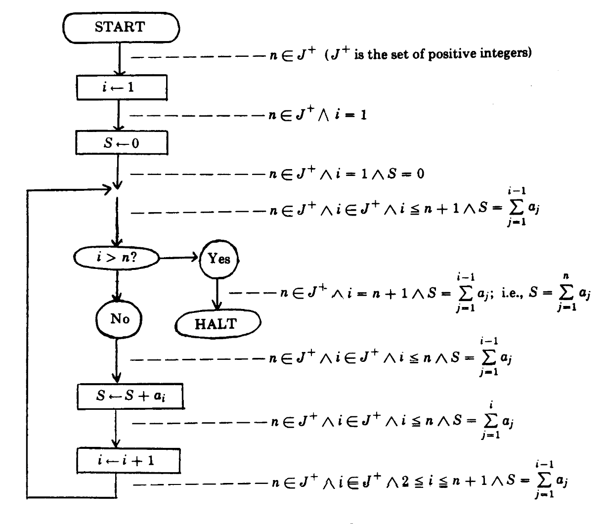

Semantics
Let's give meaning to it all. Before a tool can say anything about what a program does, we need a precise definition of what programs mean. This lecture shows three classic ways to write that definition down, and then builds the one we use all semester: a small-step operational semantics of JVM bytecode, written both as inference rules and as a Python interpreter.
The language of rules
Natural deduction: rules, premises and conclusions
The notation every semantics on this page is written in
Think of a rule as a recipe for a conclusion: "if you have flour and you have eggs, then you can have dough". We write the ingredients above a line and the result below it, and give the recipe a short name.
A proof is a tower of such recipes. Each one turns things you already have into something new, until you arrive at the thing you wanted. Checking a proof is boring on purpose: you only check that every step matches a recipe.
- A rule has premises above a horizontal line, one conclusion below it, and a name to the right. It means: if all premises hold, the conclusion holds. A rule with no premises is an axiom: its conclusion holds outright.
- Read top-down it says how to build new facts. Read bottom-up it is a plan: "to prove the conclusion, it is enough to prove every premise". Bottom-up is how you search for a proof, and (as we will see) how an interpreter runs a program.
- If there are several ways to reach a conclusion, we write several rules. Conjunction $A \land B$ needs both parts, so it has one rule with two premises. Disjunction $A \lor B$ needs either part, so it has two rules, $\lor_L$ and $\lor_R$, each with one premise.
- The things we derive are called judgements: pieces of syntax that claim something, like "$A \land B$" or, later, "$\psi \vdash e \downarrow v$". The turnstile $x \vdash y$ is read "in the context $x$, $y$ holds"; the context collects the assumptions (or environment) we may use.
- A finished proof is a derivation tree: the goal sits at the bottom (the root), every line is an instance of a rule, and the leaves at the top are axioms or assumptions.
Definition 3.1 Inference rule
An inference rule with premises $J_1, \ldots, J_n$ and conclusion $J$ is written
and states $J_1 \land \cdots \land J_n \implies J$. When $n = 0$ it is an axiom. Rules are schemas: letters like $A$, $B$, $v$ or $\sigma$ are metavariables that may be replaced by any concrete formula, value or state, and every such replacement is an instance of the rule.
"If I can show $J_1$ and $J_2$ and ... and $J_n$, then I may conclude $J$ (using the rule called name)."
The three rules from the notes, for conjunction and disjunction:
"From $A$ and $B$ conclude $A$ and $B$. From $A$ alone conclude $A$ or $B$. From $B$ alone, also conclude $A$ or $B$."
Definition 3.2 Derivation and derivability
A derivation of $J$ from assumptions $\Gamma$ is a finite tree whose root is $J$, in which every node together with its children is an instance of a rule (node = conclusion, children = premises), and whose leaves are axiom instances or members of $\Gamma$. We write $\Gamma \vdash J$ when such a tree exists and say $J$ is derivable from $\Gamma$.
"Starting from the assumptions in Gamma, I can build a proof tree that ends in $J$."
For example, from the assumptions $\Gamma = \{A, C\}$ we can derive $A \land (B \lor C)$:
"$A$ is an assumption; $C$ is an assumption, so $B \lor C$ holds by the right-or rule; together they give the conjunction by the and rule."
Proposition 3.3 Rules define the least closed set
The set $D$ of judgements derivable from $\Gamma$ is the smallest set that contains $\Gamma$ and is closed under the rules: whenever all premises of a rule instance are in the set, so is its conclusion.
Proof
$D$ is closed: if each premise $J_i$ has a derivation, put those trees side by side under a common line; that is a derivation of the conclusion. $D$ is the smallest: let $S$ be any closed set containing $\Gamma$. By induction on the height of a derivation, its root is in $S$: leaves are axioms (premise-free rule instances, so in $S$ by closure) or in $\Gamma \subseteq S$; an inner node is the conclusion of a rule whose premises are in $S$ by the induction hypothesis, so it is in $S$ by closure. Hence $D \subseteq S$. ∎
This is why we may prove facts about "everything a semantics can derive" by induction over derivation trees (rule induction), a technique used in every soundness proof of the course.
Three ways to give meaning
What are semantics?
Syntax is what you write, semantics is what it means
"The cat sat on the mat" and "Le chat s'est assis sur le tapis" are different strings with the same meaning. "Colourless green ideas sleep furiously" is grammatical but means nothing. Programs are the same: the text is the syntax, what the program does is its semantics.
A semantics is a precise dictionary from program text to meaning, written in mathematics so nobody can argue about it.
- Every approach turns a program's syntax into mathematical logic, so we can reason about it. Once we can say what a piece of syntax means, we can say what a program does, and therefore what an analysis should predict.
- Axiomatic semantics: meaning = what is true before and after each statement (Hoare triples). Great for proving one program correct.
- Denotational semantics: meaning = a mathematical object the program stands for, e.g. a function from stores to numbers. Great for expression languages and equational reasoning.
- Operational semantics: meaning = how a machine executes the program, step by step. Written like an interpreter, which is exactly what we need for JVM bytecode. This is the style used for the rest of the course.
- Semantics give us a notion of equivalence:
1 + 2and2 + 1are different syntax (a syntactic analysis sees them as different) but have the same meaning.
Definition 3.4 Semantics (general shape)
A semantics of a language $L$ assigns to every program $p \in L$ a mathematical object $\sem{p} \in D$ in some well-understood domain $D$ of meanings:
"Double brackets around a program mean: the meaning of that program, an element of the domain $D$."
The three styles differ in their choice of $D$: sets of valid triples $\{P\}\,C\,\{Q\}$ (axiomatic), functions such as $\Sigma \to \N$ (denotational), transition relations and their sets of traces (operational).
Definition 3.5 Semantic equivalence
Programs $p, q \in L$ are semantically equivalent, $p \equiv q$, when $\sem{p} = \sem{q}$. Equivalence ignores syntax: $\sem{\mathtt{1+2}} = \sem{\mathtt{2+1}} = 3$ although the two strings differ.
Axiomatic semantics and Hoare triples
Meaning as a contract: what holds before, what holds after
A Hoare triple is a contract with a cook: "if the kitchen has eggs and flour when you start, then there will be a cake when you finish". It does not say how the cake is made, only what you can count on.
Contracts snap together. If the first cook promises dough, and the second cook only needs dough to bake a cake, then the two cooks together promise a cake.
- One of the first approaches to meaning (Floyd 1967, Hoare 1969): attach preconditions and postconditions to the statements of a program.
- A Hoare triple $\{P\}\ C\ \{Q\}$ has a precondition $P$, a program $C$ and a postcondition $Q$. It means: if the world satisfies $P$ before running $C$, then it satisfies $Q$ after (if $C$ finishes).
- Example: $\{x \geq 0\}\ \mathtt{y := x + 1}\ \{y \gt 0\}$. Any state with $x \geq 0$ ends with $y = x + 1 \geq 1$.
- Triples compose: to prove $C_1 ; C_2$ correct, prove each part and check that what $C_1$ guarantees ($Q_1$) is enough for what $C_2$ needs ($P_2$), i.e. $Q_1 \Rightarrow P_2$.
- Floyd's flowchart (right) sums an array: every arrow carries an assertion that holds whenever control passes along it. The assertion at the loop head, $S = \sum_{j=1}^{i-1} a_j$, is a loop invariant: true on entry, preserved by one iteration, so true at the exit where $i = n + 1$ gives $S = \sum_{j=1}^{n} a_j$.
- This style excels at program verification (proving one specific program correct, with a human supplying the invariants), and is not typically used for automatic program analysis at large.

Take a tiny imperative language $C ::= x := e \mid C_1 ; C_2 \mid \mathtt{if}\ b\ \mathtt{then}\ C_1\ \mathtt{else}\ C_2 \mid \mathtt{while}\ b\ \mathtt{do}\ C$ over states $s : \mathit{Var} \to \Z$. Write $s \models P$ when assertion $P$ is true in $s$, and $\langle C, s\rangle \Downarrow s'$ when running $C$ from $s$ terminates in $s'$.
Definition 3.6 Hoare triple (partial correctness)
"For every start state satisfying $P$, if $C$ terminates, the end state satisfies $Q$."
Total correctness $\models [P]\ C\ [Q]$ additionally demands termination: $\forall s.\ s \models P \implies \exists s'.\ \langle C, s\rangle \Downarrow s' \land s' \models Q$.
The composition rule from the notes, in natural-deduction form:
"If $C_1$ takes $P_1$ to $Q_1$, $C_2$ takes $P_2$ to $Q_2$, and $Q_1$ implies $P_2$, then running them in sequence takes $P_1$ to $Q_2$."
Three standard rules that make the system usable (not in the notes, but they complete the picture):
"Assignment: whatever must hold of $x$ afterwards must hold of $e$ before. Consequence: you may strengthen the precondition and weaken the postcondition. While: an invariant $I$ preserved by the body still holds at the exit, where the condition is false."
Worked example. By (assign), $\{x + 1 \gt 0\}\ \mathtt{y := x + 1}\ \{y \gt 0\}$. Since $x \geq 0 \Rightarrow x + 1 \gt 0$, (cons) gives $\{x \geq 0\}\ \mathtt{y := x + 1}\ \{y \gt 0\}$.
Proposition 3.7 The sequencing rule is sound
If $\models \{P_1\}\,C_1\,\{Q_1\}$, $\models \{P_2\}\,C_2\,\{Q_2\}$ and $Q_1 \Rightarrow P_2$, then $\models \{P_1\}\,C_1;C_2\,\{Q_2\}$.
Proof
Let $s \models P_1$ and suppose $C_1;C_2$ terminates in $s_2$. Then $C_1$ terminated in some $s_1$ and $C_2$ ran from $s_1$ to $s_2$. By the first triple $s_1 \models Q_1$, so $s_1 \models P_2$ by the implication, and the second triple gives $s_2 \models Q_2$. ∎
Here derivability $\vdash \{P\}C\{Q\}$ (built with the rules) and truth $\models \{P\}C\{Q\}$ (Definition 3.6) are exactly the $\vdash$ versus $\models$ distinction from week 1; soundness of Hoare logic is "$\vdash$ implies $\models$".
Denotational semantics
Translate the program into mathematics you already trust
Denotational semantics is a translator. It takes a sentence in a new language and translates it, word by word, into a language you already understand perfectly: ordinary mathematics. "x + 5" becomes "the function that looks up x and adds five".
The translation of a big phrase is built from the translations of its parts, like a dictionary that works on whole sentences.
- Take the tiny expression language $\mathbb{EX}$ from the notes: additions, variables $x$ and natural numbers $n$.
- The meaning of an expression is a function from stores to numbers: $\mathcal{E} : \mathbb{EX} \to (\Sigma \to \N)$. A store $\sigma \in \Sigma$ tells the value of every variable, e.g. $\sigma = [x \mapsto 3]$.
- Three equations, one per syntax form: numbers mean themselves, variables mean "look me up in the store", and syntactic
+means mathematical $+$ of the meanings of the two sides. - The definition is compositional: the meaning of $e_1 + e_2$ only depends on the meanings of $e_1$ and $e_2$. That is what lets us calculate the meaning of
x + 5with ordinary algebra (worked out below). - If this looks like functional programming, that is right: the three equations are an evaluator. Denotational semantics fits expression-oriented languages especially well. You will meet another one for regular expressions, where a regex denotes a set of strings.
def E(e, store): # E : EX -> (Sigma -> N), curried by hand
match e:
case Num(n): return n # E[[n]] s = toNat([[n]])
case Var(x): return store[x] # E[[x]] s = lookup([[x]], s)
case Add(e1, e2): return E(e1, store) + E(e2, store)Definition 3.8 The expression language $\mathbb{EX}$ and stores
"An expression is a sum of two expressions, a variable, or a number literal. A store maps every variable to a natural number."
Definition 3.9 Denotation of expressions
"The meaning of a numeral is the number it spells; the meaning of a variable is its value in the store; the meaning of a sum is the sum of the meanings." The typewriter + on the left is syntax; the $+$ on the right is addition of natural numbers.
Worked example from the notes, with $\sigma = [x \mapsto 3]$:
Proposition 3.10 $\mathcal{E}$ is well defined and compositional
For every $e \in \mathbb{EX}$, $\Den{e}$ is a total function $\Sigma \to \N$. Moreover, if $\Den{e_1} = \Den{e_1'}$ then $\Den{e_1 + e_2} = \Den{e_1' + e_2}$ (replacing a part by an equivalent part never changes the meaning).
Proof
By structural induction on $e$. Numerals and variables have exactly one equation each, which yields a natural number for every $\sigma$ (stores are total). For $e_1 + e_2$, the induction hypothesis gives total functions for $e_1$ and $e_2$, and the third equation adds their values, so it is total too. Every expression matches exactly one equation, so the meaning is unique. Compositionality is immediate from the third equation: it mentions $e_1$ only through $\Den{e_1}$. ∎
Operational semantics: small-step and big-step
Meaning as the moves of a machine
To explain chess you can list the legal moves (one move at a time), or you can say who wins from a position (skip straight to the end). Small-step semantics is the move list. Big-step semantics is the final result.
Both describe the same game. The move list is more work to write, but it tells you everything that happens along the way, including games that never end.
- Operational semantics describes the meaning of a program as changes to a state. That makes it ideal for imperative languages like JVM bytecode, and it reads like an interpreter, which is handy because you are going to write one.
- Structural operational semantics (SOS, Plotkin), also called small-step semantics, uses the judgement $\psi \vdash \sigma \to \bar\sigma$: in environment $\psi$, state $\sigma$ takes one step to $\bar\sigma$ (the bar means "the next one").
- Natural or big-step semantics uses $\psi \vdash \sigma \downarrow v$: running $\sigma$ to completion gives the final value $v$. It often looks simpler because it ignores the order of intermediate steps.
- Example, arithmetic: small-step first rewrites the left operand until it is a number, then the right operand, then adds. Big-step has one rule: evaluate both sides fully, then add.
Definition 3.11 Small-step and big-step judgements
Given an environment (context) $\psi$, a small-step semantics defines a relation $\psi \vdash \sigma \to \bar\sigma$ between states, and a big-step semantics a relation $\psi \vdash \sigma \downarrow v$ between states and final values, each as the least relation closed under a set of inference rules (Proposition 3.3).
"Single arrow: one step. Down arrow: all the way to a value."
For arithmetic expressions $e ::= n \mid e_1 \oplus e_2$ (with $\oplus \in \{+, -, \times\}$; numbers $n$ are the values), the small-step rules are
"Step inside the left operand; once the left is a number, step inside the right; once both are numbers, compute."
and the big-step rules are
"A number evaluates to itself. A compound expression evaluates to $n$ if its operands evaluate to $n_1$ and $n_2$ and $n$ is their combination."
Proposition 3.12 The small-step relation is deterministic
For every expression $e$ there is at most one $\bar e$ with $e \to \bar e$.
Proof
By induction on $e$. A number has no step. For $e_1 \oplus e_2$ exactly one rule can apply: $(\oplus_L)$ if $e_1$ is not a number, $(\oplus_R)$ if $e_1$ is a number and $e_2$ is not, $(\oplus_N)$ if both are numbers; the three cases are disjoint. Within $(\oplus_L)$ and $(\oplus_R)$ the premise has at most one result by the induction hypothesis. ∎
The rules fix an evaluation order (left to right). Determinism is why "the next state" is well defined and why an interpreter can be a function rather than a search.
Example: function application in the lambda calculus
One big-step rule becomes three small-step rules
The lambda calculus is the smallest programming language there is: it has only functions. "Calling" a function means plugging the argument into the function's body.
A big-step description says it in one breath: work out the function, work out the argument, run the body with the argument plugged in. A small-step description has to say what to do next at every moment, so the same idea splits into three smaller moves, and the machine must remember where it is in the middle.
- Syntax: $e ::= x \mid \lambda x.e \mid e_1\, e_2$ (variable, function with parameter $x$ and body $e$, application). The environment $\psi$ maps variables to values; $\psi[x \mapsto v]$ is $\psi$ updated so that $x$ means $v$.
- A function value is a closure $(\psi_1 \mid \lambda x.e)$: the function together with the environment $\psi_1$ it was created in, so it remembers the variables it captured.
- Big-step: $e_1\,e_2$ evaluates to $v$ if $e_1$ evaluates to a function, $e_2$ evaluates to $v_2$, and the body evaluates to $v$ with $x \mapsto v_2$. One rule, three premises.
- Small-step cannot do all that at once, so it carries partial progress inside the expression. We extend expressions with $(\psi_1 \mid e)$: "expression $e$ being evaluated in scope $\psi_1$". Then three rules: $\beta^1$ steps the function part, $\beta^2$ steps the argument once the function is a closure, $\beta^3$ enters the body with the argument bound. Two closure rules $\psi^1, \psi^2$ let evaluation continue inside $(\psi_1 \mid e)$ and finish it.
- The order is built into the rules: function first, then argument, then call. That is call-by-value, left to right, the same order Java uses.
The big-step application rule from the notes:
"If the function part evaluates to a lambda with parameter $x$ and body $e_3$, the argument evaluates to $v_2$, and the body evaluates to $v$ when $x$ means $v_2$, then the application evaluates to $v$."
The small-step rules from the notes, where $\bar e$ is the result of one step:
"$\beta^1$: step the function. $\beta^2$: once it is a closure, step the argument. $\beta^3$: once the argument is a value, continue with the body inside the closure's scope extended with $x \mapsto v$. $\psi^1$: inside a scoped expression, step using the combined environment ($\psi_1$ wins on conflicts). $\psi^2$: when the scoped expression reaches a value, drop the scope."
To run a full example we also need the two rules that turn syntax into values (implicit in the notes):
Worked reduction. Let $\psi = [y \mapsto w]$ for some value $w$ and evaluate $(\lambda x.x)\; y$:
The big-step rule reaches the same $w$ with a single derivation: $\psi \vdash \lambda x.x \downarrow \lambda x.x$, $\psi \vdash y \downarrow w$, and $\psi[x \mapsto w] \vdash x \downarrow w$.
Recovering big-step from small-step
Why the course chooses small steps
Small-step is a movie, big-step is a photo of the last frame. From the movie you can always get the last frame: just play it to the end. From a photo you can never get the movie back. And if the movie never ends, there is no last frame at all, so the photo version has nothing to say.
- Big-step semantics is easier to read, but it has two weaknesses (from the notes): it cannot reason about programs that run forever (there is simply no derivation, exactly as for a program that gets stuck on an error), and it does not hand you a step-by-step implementation.
- Small-step semantics turns directly into an interpreter:
while not finished: state = step(state). You can stop after $k$ steps, print every intermediate state, and look at programs that never terminate. Program analysis needs all three. - We lose nothing: two rules recover big-step from small-step by "keep stepping until you reach a value".
The rules from the notes:
"If one step takes $\sigma$ to $\bar\sigma$ and $\bar\sigma$ runs to $v$, then $\sigma$ runs to $v$. If one step already reaches the value $v$, $\sigma$ runs to $v$."
Definition 3.13 Many steps and divergence
$\to^*$ is the reflexive transitive closure of $\to$: $\sigma \to^* \sigma'$ if there are $n \geq 0$ states with $\sigma = \sigma_0 \to \sigma_1 \to \cdots \to \sigma_n = \sigma'$. A state diverges if there is an infinite chain $\sigma_0 \to \sigma_1 \to \sigma_2 \to \cdots$. A non-value state with no step is stuck.
Proposition 3.14 Big-step equals "run small steps to a value"
With the rules (step) and (done): $\psi \vdash \sigma \downarrow v$ if and only if $\sigma \to^* v$ in at least one step.
Proof
($\Rightarrow$) By induction on the derivation of $\sigma \downarrow v$. If the last rule is (done) we have $\sigma \to v$. If it is (step) we have $\sigma \to \bar\sigma$ and, by induction, $\bar\sigma \to^* v$; prepend the step. ($\Leftarrow$) By induction on the length $n \geq 1$ of $\sigma \to \cdots \to v$. For $n = 1$ use (done). For $n \gt 1$ the chain is $\sigma \to \bar\sigma \to^* v$ with a shorter tail; the induction hypothesis gives $\bar\sigma \downarrow v$, and (step) gives $\sigma \downarrow v$. ∎
Corollary 3.15 Big-step is blind to divergence
If $\to$ is deterministic and $\sigma$ diverges, there is no $v$ with $\sigma \downarrow v$. The same holds when $\sigma$ gets stuck. So big-step semantics cannot tell "loops forever" apart from "crashes".
E in topic 04) is a big-step implementation. What it cannot do is pause after $k$ steps, show intermediate states, or report "still running", and those are what interpreters for analysis need.Programs as transition systems
Transition systems
States, moves, and where you may start
A board game is fully described by three things: every position the board can be in, the legal moves between positions, and the starting positions. A program is the same kind of game. Once we have a small-step semantics, we have all three.
- The states are everything the machine can be in: for the JVM, a heap and a call stack, plus the final outcomes
okanderr(...). - The transition relation $\delta_p$ is given by the single-step rules: $\delta_p(s, s')$ holds exactly when $\bc \vdash s \to s'$ can be derived.
- The initial states $I_p$ are all the ways the program can start: one frame for the method, its parameters in the locals, an empty stack, the program counter at offset 0. One initial state per possible input.
- A relation (not a function) allows several successors: that is how non-determinism (threads, random choices) is modelled. Our JVM is deterministic, so every state has at most one successor.
- Example:
assertPositive(int num)has $2^{32}$ initial states, one for eachint, but only a handful of distinct paths through the code.
collatz, each state simplified to the value of n: initial states on the left, $\delta_p$ as arrows. From 4 or 1 the run reaches ok; from 0 the state steps to itself, an infinite trace.Definition 3.16 Transition system (course notes)
A transition system is a triple $\langle \State_p, \delta_p, I_p \rangle$ where $\State_p$ is the set of program states, $\delta_p \subseteq \State_p \times \State_p$ is the transition relation (defined by the single-step semantics) and $I_p \subseteq \State_p$ are the possible initial states.
"A program's states, which state can follow which, and where it may begin."
Definition 3.17 The transition system of a JVM method
For a method $m$ with bytecode $\bc$ (Part 5):
"States are heap plus call stack, or a final outcome. One state may follow another exactly when the rules derive the step. We start with a single frame whose locals are the arguments, an empty operand stack, at offset 0 of $m$."
The final configurations $\ok$ and $\err(\ldots)$ have no successors. Our JVM semantics is deterministic: for every $s$ there is at most one $s'$ with $\delta_p(s, s')$, so $\delta_p$ is a partial function.
Traces and the maximal trace semantics
The meaning of a program is the set of all its runs
A trace is a full replay of one game: every position, in order, from the start. The meaning of a program is the box containing every possible replay. Questions like "can it crash?" or "does it always finish?" are now questions about what is in the box.
- A trace $\tau = \tau_0 \tau_1 \tau_2 \cdots$ is a sequence of states starting in an initial state, where each state is followed by one of its successors. $\tau_i$ is the $i$-th state, $|\tau|$ the length (possibly $\infty$).
- Running the program from one input produces one trace (deterministic). Collecting the traces for all inputs gives $\Sem(p)$, the maximal trace semantics.
- Finite traces end in
okor an error (or a stuck state); infinite traces are programs that never stop. - Program properties become math: "$p$ halts on every input" means "every trace in $\Sem(p)$ is finite". The set of such programs is $\mathcal{L}_{\mathit{halt}}$.
- Preview of later weeks: the bounded semantics $\Sem^k(p)$ only keeps traces with at most $k$ states. It is finite to explore, which is what dynamic and bounded static analysis exploit.
Definition 3.18 Trace
The traces of $p$ are sequences of states $\Trace_p \subseteq \State_p^{n}$ for $n \in [1, \infty]$ (the notes write $\State_p^{\star}$; infinite sequences are included). We use $\tau$ for traces, $\tau_i$ for the $i$-th state, $\tau_0$ for the initial state and $|\tau|$ for the length.
Definition 3.19 Maximal trace semantics
"The meaning of $p$ is the set of all state sequences, finite or infinite, that start in an initial state and in which every state is followed by a legal successor."
Definition 3.20 The halting programs
"A program halts when none of its traces is infinite." Deciding membership is the halting problem: we wrote it down precisely, which does not make it decidable.
Definition 3.21 Bounded trace semantics (Trace Terminology)
"Same as before, but only sequences of at most $k$ states."
Proposition 3.22 Bounded semantics grow towards the finite traces
$\Sem^{k}(p) \subseteq \Sem^{k+1}(p)$, and $\bigcup_{k \geq 1} \Sem^{k}(p)$ is exactly the set of finite traces in $\Sem(p)$.
Proof
The defining condition only changes $n \in [1,k]$ to $n \in [1,k+1]$, so the sets grow. A finite trace of length $n$ is in $\Sem^{n}$; conversely every element of some $\Sem^{k}$ is a finite trace of $\Sem(p)$. Infinite traces are in no $\Sem^{k}$. ∎
Java bytecode
Why bytecode? The JVM and class files
Write once, run anywhere, and analyse one simple language
Imagine publishing a book in a dozen countries. You could translate it a dozen times, or you could write it once in a simple shared language and give every country a cheap translator. Java does the second: the shared language is bytecode, and every computer runs a translator called the Java Virtual Machine.
For us that is great news: instead of analysing Java's rich syntax, we analyse a small, regular instruction language.
- Processors speak different instruction sets (x86, ARM, RISC-V). Supporting them all means producing machine code for each.
- Java wanted "write once, run everywhere", so
javaccompiles to JVM bytecode stored in.classfiles (class files). A virtual machine written once per platform runs that bytecode. - A class file contains the class name, its fields and its methods; each method contains a list of instructions.
javap -cprints them. - The real JVM has about two hundred instructions, many of them typed variants (
iload,fload,aload,iload_0, ...). The course usesjvm2json, which decompiles class files to JSON in an intermediate language of 39 instructions (e.g. all loads becomeloadwith a type, all comparisons with zero becomeifz) and applies some useful simplifications. - One more simplification: jvm2json numbers instructions 0, 1, 2, ... (instruction indices), while
javapprints byte offsets. Jump targets in our listings are instruction indices.
$ javap -cp target/classes -c jpamb.cases.Simple
...
public static void assertPositive(int);
Code:
0: getstatic #7 // Field $assertionsDisabled:Z
3: ifne 18
6: iload_0
7: ifgt 18
10: new #13 // class java/lang/AssertionError
13: dup
14: invokespecial #15 // Method java/lang/AssertionError."<init>":()V
17: athrow
18: returnByte offsets on the left (constant-pool numbers like #7 vary). The same method in the course language is get, ifz ne 8, load:I 0, ifz gt 8, new, dup, invoke special, throw, return at indices 0 to 8.
Definition 3.23 Bytecode
The bytecode of a program is a finite map from program counters to instructions, $\bc : \mathit{PC} \rightharpoonup \mathit{Instr}$, where a program counter names a method and an instruction index (topic 13). $\bc[\iota]$ is the instruction at $\iota$. $\mathit{Instr}$ is the course's instruction set ($\mathtt{push}$, $\mathtt{load}$, $\mathtt{store}$, $\mathtt{binary}$, $\mathtt{ifz}$, $\mathtt{if}$, $\mathtt{goto}$, $\mathtt{return}$, $\mathtt{get}$, $\mathtt{new}$, $\mathtt{dup}$, $\mathtt{invoke}$, $\mathtt{throw}$, ...).
"Given a place in the program, $\bc$ tells you which instruction sits there."
$\bc$ never changes while the program runs, so it is the context (left of the turnstile) of every judgement: $\bc \vdash s \to s'$.
Reading decompiled bytecode
opr tells you what to do; the stack tells you to what
Bytecode reads like a recipe for someone with a single stack of plates: "put a plate on top", "take the top two plates, combine them, put the result back", "if the top plate is empty, skip to step 6". Nothing has a name; everything happens on top of the stack.
The notes' example is assertFalse (Java: assert false;). Extracted with jq '.methods[] | select(.name=="assertFalse") | .code.bytecode' target/decompiled/jpamb/cases/Simple.json:
[
{ "opr": "get", "field": { "class": "jpamb/cases/Simple", "name": "$assertionsDisabled", "type": "boolean" }, "static": true },
{ "opr": "ifz", "condition": "ne", "target": 6 },
{ "opr": "new", "class": "java/lang/AssertionError" },
{ "opr": "dup", "words": 1 },
{ "opr": "invoke", "access": "special", "method": { "args": [], "is_interface": false, "name": "<init>",
"ref": { "kind": "class", "name": "java/lang/AssertionError" }, "returns": null } },
{ "opr": "throw" },
{ "opr": "return", "type": null }
]| # | opr | stack before | what happens |
|---|---|---|---|
| 00 | get | [] | Read the static boolean $assertionsDisabled and push it. |
| 01 | ifz | [bool] | Pop it; if it is not equal to zero (assertions are disabled), jump to instruction 6 (return). |
| 02 | new | [] | Otherwise allocate a new AssertionError object and push a reference. |
| 03 | dup | [ref] | Duplicate the reference. |
| 04 | invoke | [ref, ref] | Call the constructor <init>, which consumes the top reference. |
| 05 | throw | [ref] | Throw the assertion error. |
| 06 | return | [] | Otherwise return normally. |
- Why
dup? The constructor call eats one reference, andthrowneeds another. Duplicating keeps a copy forthrow. jpamb inspect "jpamb.cases.Simple.assertBoolean:(Z)V"shows a method;--format=reprshows the Python objects,--format=realthe JVM mnemonics,--format=jsonthe decompiled JSON.- In Python, parse one instruction with
jpamb.jvm.Opcode.from_json, or a whole method withjpamb.Suite.method_opcodes(methodid, eff=eff). The instruction classes live insrc/jvm/opcode.py.
Definition 3.24 Stack effect
The stack effect of an instruction says how many values it pops and pushes, written $\sigma\, v_1 \cdots v_k \Rightarrow \sigma\, w_1 \cdots w_l$, where $\sigma$ is the untouched rest of the stack (top on the right). Examples:
"Push adds one value on top. Binary takes the top two and puts back one. Dup copies the top. Ifz consumes the top. New pushes a fresh reference. Throw consumes a reference and leaves the method with an error."
Fact Stack heights are fixed per instruction
The JVM's bytecode verifier only accepts code in which, at each instruction index, the operand stack has the same height and the same types no matter which path reached it. This is why "the stack at instruction 4" makes sense, and it is what makes the per-instruction abstraction of week 5 work.
The semantics of the JVM
What we are defining: the JVM step judgement
One rule per instruction, one Python case per rule
We are writing the rulebook of the JVM game: for every kind of instruction, one rule that says what the next position looks like. A step ends in one of three ways: the game continues in a new position, the game is over and all went well, or the game is over with an error.
- Three judgement forms: $\bc \vdash s \to \bar s$ (continue in a new state), $\bc \vdash s \to \ok$ (finished normally) and $\bc \vdash s \to \err(\text{`msg'})$ (finished with an error such as
'divide by zero'). - The same thing in Python is a function
stepthat, given a state, returns a new state or a string naming the outcome. - We write each rule twice, in math and in Python, using the state classes of the course's Python library (
jvm.state). - Our JVM is limited: no threads, no exception handlers, no
long/double. The JPAMB outcomes are all we need.
def step(bc: Bytecode, s: State) -> State | str:
...Definition 3.25 Configurations and the step judgement
Let $\mathit{Conf} = \State \cup \{\ok\} \cup \{\err(m) \mid m \in \mathit{Msg}\}$ with $\mathit{Msg} = \{$'assertion error', 'divide by zero', 'out of bounds', 'null pointer'$\}$. The semantics defines the relation
"With bytecode $\bc$, state $s$ steps to configuration $c$, which is either the next state, ok, or an error with a message."
Proposition 3.26 Determinism, and what "stuck" means
For each $s$ at most one rule instance applies, so there is at most one $c$ with $\bc \vdash s \to c$. If none applies (an instruction we did not define, or ill-typed values such as adding a reference), $s$ is stuck; in the Python interpreter this shows up as a NotImplementedError or a failing assert.
The context and the program counter
Where am I? Which method, which instruction
The program counter is a bookmark: it says which recipe (method) you are reading and which line of it. Most instructions move the bookmark one line down; jumps move it to a specific line.
- Every rule runs in the context of the bytecode $\bc$. The lookup $\bc[\iota]$ gives the instruction at program counter $\iota$.
- $\iota = \langle \iota_m, \iota_o \rangle$: the method name and the offset in that method. Two shorthands: $\iota + n$ moves forward by $n$, and $\iota \leftarrow n$ jumps to offset $n$ in the same method.
- In Python, the
PCclass ofjvm.stateoverloads+=and%=for exactly these two operations, and the bytecode is indexed with it.
class PC:
method: jvm.AbsMethodID
offset: int
>>> pc = PC(method, offset)
>>> pc += n # add n to the offset (iota + n)
>>> pc %= n # replace the offset with n (iota <- n)
>>> suite, eff = jpamb.setup()
>>> bc = jpamb.Bytecode(suite, eff, {})
>>> bc[pc] # the instruction at pc (bc[iota])Definition 3.27 Program counters
"A program counter is a method and an offset. Plus n moves the offset forward. Arrow n sets the offset to n, staying in the same method."
Calls are the only way to change $\iota_m$, and they do it by pushing a new frame with its own program counter (topic 17), never by editing the current one.
Values: what can live on the stack and in the heap
Every value carries its type
Every value in our machine wears a name tag saying what kind of thing it is: "int 5", "ref 3". Small, simple things (numbers, addresses) go on the stack. Big things (arrays, objects) live in a warehouse called the heap, and the stack only holds their address.
- Values are dynamically typed in our interpretation: each value carries its type, so the interpreter can check "expected int, but got ref".
- Stack values $\mathbf{V}_\sigma$: signed 32-bit integers, 32-bit IEEE 754 floats, and 32-bit references to the heap.
- Heap values $\mathbf{V}_\eta$: anything a stack value can be, plus 8-bit bytes, 16-bit unsigned chars, signed 16-bit shorts, arrays (a type and a list of values) and objects (a class name and a map from field names to values).
- Booleans are just ints 0 and 1 on the stack (the
Zin(Z)V); chars are pushed as their int code. - We skip
longanddouble(in the real JVM they take two stack slots) and avoid inner classes and bootstrap methods. The Python types live injvm.type.
Definition 3.28 Stack and heap values
with $n \in \mathbb{I}_{32} = [-2^{31}, 2^{31}-1]$, $b \in [-2^7, 2^7-1]$, $c \in [0, 2^{16}-1]$, $s \in [-2^{15}, 2^{15}-1]$, $r \in \N \cup \{\mathtt{null}\}$, $t$ an element type, $a$ a list of values, $cn$ a class name and $fs$ a finite map from field names to $\mathbf{V}_\eta$.
"A stack value is a tagged int, float or reference. A heap value is a stack value or a byte, char, short, array or object."
Definition 3.29 32-bit wrap-around
"Do the arithmetic on mathematical integers, then fold the result back into the 32-bit range like a car odometer." So $2^{31} - 1 +_{i32} 1 = -2^{31}$.
2147483647 + 1 is -2147483648 in the JVM, while mathematical integers (and Python's) just keep growing. The semantics uses the 32-bit operations $+_{i32}$, $-_{i32}$, $\times_{i32}$.The operand stack, the locals, and the frame
$\langle \lambda, \sigma, \iota \rangle$: the state of one method call
A method call works at a desk with three things on it: a row of labelled drawers (the locals: parameters and local variables), a pile of scratch paper (the operand stack: intermediate results, newest on top), and a bookmark (the program counter). Together they are a frame.
- The JVM is stack-based: instead of named registers, intermediate values go on an operand stack.
1 + 2is "push 1, push 2, add". - The stack is a list of stack values, $\sigma \in \mathbf{V}_\sigma^*$. $\epsilon$ is the empty stack and we add and remove at the right end: $\epsilon(\mathtt{int}\ 1)(\mathtt{int}\ 2)(\mathtt{int}\ 3)$ has 3 on top.
- The locals $\lambda$ are an array indexed from 0. The method's arguments come first: in
assertPositive(int num), $\lambda[0]$ isnum. - A frame is the triple $\langle \lambda, \sigma, \iota \rangle$. The initial frame of
assertPositive(5)is $\langle [(\mathtt{int}\ 5)], \epsilon, \langle \mathit{assertPositive}, 0\rangle \rangle$.
class OperandStack:
operands: deque[StackValue]
class Locals:
locals: list[StackValue | None]
class Frame:
locals: Locals
stack: OperandStack
pc: PCDefinition 3.30 Operand stack, locals and frame
$\epsilon$ is the empty stack and $\sigma v$ is $\sigma$ with $v$ pushed on top (juxtaposition is concatenation). $\lambda[n]$ reads local $n$ and $\lambda[n \mapsto v]$ is $\lambda$ with local $n$ replaced by $v$.
"A stack is a finite sequence of stack values; locals map indices to stack values; a frame is locals, stack and program counter."
Pattern matching on stacks is how rules pop: a rule whose left side mentions $\langle \lambda, \sigma(\mathtt{int}\ v_1)(\mathtt{int}\ v_2), \iota\rangle$ only applies when the top two values are ints, and names them $v_1$ (below) and $v_2$ (top).
The stepping function: push, load and store
Our first rules, in math and in Python
"Push 5" means: write 5 on a new sheet, put it on top of the pile, move the bookmark one line down. "Load 0" means: copy what is in drawer 0 onto a new sheet on the pile. "Store 1" means the opposite: take the top sheet off the pile and put it in drawer 1.
- Most instructions only touch the current frame, so the first judgement form is $\bc \vdash \langle \lambda, \sigma, \iota\rangle \to \langle \bar\lambda, \bar\sigma, \bar\iota\rangle$.
- The Python
steppeeks at the top frame, looks up the instruction at its pc, and matches on it. Eachcaseis one rule. By default it returns the (mutated) state. - Read the rule and the code side by side: the premise "$\bc[\iota] = (\mathtt{push{:}I}\ v)$" is the
casepattern; the conclusion's new stack is thepush; $\iota + 1$ isframe.pc += 1.
def step(bc: jpamb.Bytecode, state: State) -> tuple[PC, State | str]:
frame = state.frames.peek()
opr = bc[frame.pc]
pc, output = frame.pc, state # default: output the (updated) state
print(f"Stepping {pc}:\n > {opr}", file=sys.stderr)
match opr:
case jvm.Push(type=t, value=v):
if t is not jvm.Int():
raise NotImplementedError(f"Don't know how to handle {t}")
frame.stack.push(StackInt(v))
frame.pc += 1
case jvm.Load(type=jvm.Int(), index=n):
v = frame.locals[n]
frame.stack.push(v)
frame.pc += 1
# ... the other opcodes
return pc, output"If the instruction at $\iota$ pushes the int $v$, the stack gains $(\mathtt{int}\ v)$ on top and the pc moves to the next instruction; the locals are unchanged."
"If the instruction loads local $n$, and local $n$ holds the int $v$, push a copy of it."
"If the instruction stores into local $n$ and the top of the stack is the int $v$, pop it and put it into local $n$."
A concrete instance. In divideByN with input 0, $\bc[\langle \mathit{divideByN}, 0\rangle] = (\mathtt{push{:}I}\ 1)$, so
case. The premises become the pattern and guards, the conclusion becomes the updates. If you can read one, you can write the other.The call stack and the heap
The full state is $\langle \eta, \mu \rangle$
When a method calls another, the caller's desk is not cleared: a new desk is stacked on top of it for the callee. When the callee finishes, its desk is removed and the caller continues where it left off. That stack of desks is the call stack.
Desks cannot see each other's drawers, so to share bigger things they use the warehouse everyone can reach: the heap.
- The call stack $\mu$ is a sequence of frames, the active (top) frame on the right: $\mu \sim \ldots\langle\lambda_2, \sigma_2, \iota_2\rangle\langle\lambda_1, \sigma_1, \iota_1\rangle$.
- The heap $\eta$ maps memory locations (natural numbers) to heap values. A
(ref r)on a stack points to $\eta(r)$. - The full state is the pair $\langle \eta, \mu \rangle$, and the real step judgement is $\bc \vdash \langle \eta, \mu\rangle \to \langle \bar\eta, \bar\mu\rangle$.
- We do not rewrite the frame rules: two lifting rules say "a frame step is also a state step, on the top frame, with the heap untouched".
invoke staticpops the arguments and pushes a new frame whose locals are those arguments;return(topic 18) pops it again.
class State:
heap: Heap
frames: CallStackDefinition 3.31 Call stack, heap and state
"The call stack is a sequence of frames, top on the right. The heap is a finite map from locations to heap values. A state is a heap and a call stack."
The lifting rules from the notes:
"A step of the top frame is a step of the whole call stack (frames below stay as they are). A step of the call stack is a step of the state (the heap stays as it is)."
Calling a static method with $k$ arguments (the rule our labs use):
"Pop the $k$ arguments, keep the caller's frame with its pc still on the call, and push a new frame for $m$ whose locals are the arguments, with an empty stack, at offset 0."
Rules that need the heap (like new, topic 21) are written directly on $\langle \eta, \mu\rangle$.
Terminating the program: return
Hand the value back, or finish with ok
Returning means: take the answer off your pile, clear your desk away, and put the answer on the pile of whoever called you; they then continue with their next line. If nobody called you (you were the first desk), the whole program is done and all went well.
- Our simplified JVM terminates when it exits from the last method ($\ok$) or when it meets an error ($\err(\ldots)$).
- Two return rules: $\mathsf{return}_\epsilon$ when the call stack below is empty, and $\mathsf{return}_\mu$ when there is a caller frame. In the second case the caller's pc moves past its
invoke. - A
voidmethod'sreturnis the same without a value.
case jvm.Return(type=jvm.Int()):
v1 = frame.stack.pop()
state.frames.pop()
if state.frames:
frame = state.frames.peek()
frame.stack.push(v1)
frame.pc += 1
else:
output = "ok""Returning an int from the only frame finishes the program successfully."
"Returning an int when a caller frame $\mu_2$ sits below: drop the callee frame $\mu_1$, push $v$ on the caller's stack and move the caller past the call."
Errors: division and 32-bit arithmetic
One instruction, two rules: the happy path and the error
Dividing is normally boring: take two numbers off the pile, put their quotient back. But if the bottom of the fraction is zero, there is no answer, and the program stops with an error instead. In rules that is just a second rule for the same instruction, with the opposite condition.
binary:I divpops $v_2$ (top) and $v_1$ and computes $v_1 / v_2$. If $v_2 = 0$ the rule $\mathsf{bdiv}_{I0}$ ends in $\err(\text{`divide by zero'})$; otherwise $\mathsf{bdiv}_{I1}$ pushes the quotient. The two rules have contradictory side conditions, so exactly one applies.- The quotient is computed with $/_{i32}$, Java's 32-bit integer division: it truncates toward zero ($-7 / 2 = -3$), and $-2^{31} / -1$ wraps around to $-2^{31}$.
- In Python, the binary case pops both values, asserts they are ints, and delegates to a
binaryhelper that returns either an int or an error string.
case jvm.Binary(type=jvm.Int(), operant=op):
v2, v1 = frame.stack.pop(), frame.stack.pop()
assert isinstance(v1, jvmc.StackInt), f"expected int, but got {v1}"
assert isinstance(v2, jvmc.StackInt), f"expected int, but got {v2}"
value: int | str = binary(op, v1.value, v2.value)
if isinstance(value, str):
output = value # e.g. "divide by zero"
else:
frame.stack.push(jvmc.StackInt(value))
frame.pc += 1
def binary(op, v1: int, v2: int) -> int | str:
match op:
case jvm.BinaryOpr.Div:
try:
return v1 // v2
except ZeroDivisionError:
return "divide by zero"
case a:
raise NotImplementedError(f"Unhandled binary {op!r}")"If the divisor on top is zero, stop with the error. Otherwise replace the top two ints by their 32-bit quotient and move on." (The notes leave $\lambda$ out of these frames since it does not change.)
Definition 3.32 32-bit division and remainder
"Divide the sizes, round down, give it the right sign (that is: round toward zero), and wrap. The remainder is what is left over, so it has the sign of $v_1$."
The general rule for the other operators is the same shape as $\mathsf{bdiv}_{I1}$ with $\mathit{op}_{i32} \in \{+_{i32}, -_{i32}, \times_{i32}\}$; rem has its own zero rule $\mathsf{brem}_{I0}$.
binary uses Python's v1 // v2. That is floor division: -7 // 2 == -4, but Java gives -3. Likewise Python's % takes the sign of the divisor (-7 % 2 == 1, Java: -1), and Python integers never overflow. The semantics is Definition 3.32, not Python's arithmetic.Branching: ifz, if and goto
Jumps are just assignments to the program counter
A branch is a fork in the recipe: "if the top sheet says zero, skip to line 8; otherwise just continue". The sheet is thrown away either way. A goto is an unconditional "skip to line 4", which is how loops jump back.
ifz c tpops one int $v$ and compares it with 0 using condition $c$. If $v \mathrel{c} 0$ holds, jump to $t$ ($\iota \leftarrow t$); otherwise fall through ($\iota + 1$).if c tpops two ints $v_2$ (top) and $v_1$ and compares $v_1 \mathrel{c} v_2$. Mind the order: the value pushed first is on the left.- Conditions:
eq$=$,ne$\neq$,lt$\lt$,ge$\geq$,gt$\gt$,le$\leq$. - javac often compiles a condition negated:
if (n <= 1) return 1;becomes "if $n \gt 1$ jump past the return".
case jvm.Ifz(condition=op, target=target):
value = frame.stack.pop()
assert isinstance(value, jvmc.StackInt), f"expected int, but got {value}"
if compare(op, value.value, 0):
frame.pc %= target # jump: iota <- t
else:
frame.pc += 1 # fall through: iota + 1The ifz rule as a Python case, as in the notes.
"If the comparison holds, the new pc is the target; if it fails, the next instruction. Either way the compared values are popped. Goto always jumps."
The pair $\mathsf{ifz}_1$ / $\mathsf{ifz}_2$ has complementary side conditions, so determinism (Proposition 3.26) is preserved. Branch rules are where a dynamic analysis sees only one side and a static analysis must consider both (week 5).
dup and the remaining rules
Completing the small-step semantics
dup photocopies the top sheet of the pile and puts the copy on top. That's the whole instruction. Its rule is a good test of understanding: if you can express "photocopy the top sheet" as a rule, you can express any instruction.
- Find the instruction in the resources:
jvm2json/CODEC.txt(search for<ByteCodeInst>; dup is{"opr": "dup", "words": 1}), the Wikipedia list of bytecode instructions, chapter 4 (class file format) and chapter 6 (instruction set) of the JVM specification. - Ask the three questions for any instruction: what must be on the stack (the left side pattern)? what is on the stack after (the right side)? where does the pc go?
- For
dup: some value $v$ on top; afterwards $v$ twice; pc + 1. The locals and heap do not change. - Below are the remaining rules our labs use:
incr,get,new, the constructor call andthrow. Inassert-compiled code,new; dup; invoke special <init>; throwalways appear together.
"If the instruction is dup and the top of the stack is $v$, the new stack has $v$ twice on top, and the pc moves on." Note $v$ may be any stack value (int or ref): that is why it is not tagged.
"Incr adds a constant to a local in place. Get pushes false for $assertionsDisabled (assertions are on). New picks a fresh heap location, stores an empty object there and pushes a reference. The (empty) constructor just pops its reference. Throwing an AssertionError ends the run with the assertion error."
The get and init rules are deliberate simplifications (the notes allow assuming $assertionsDisabled is always false); a full JVM would read the static field from the heap and run the constructor's code in a new frame.
From rules to an interpreter
An executable version of the semantics
An interpreter is the rulebook turned into a program: a loop that looks at the current position, finds the one rule that applies, makes the move, and repeats until the game ends or you run out of patience.
- The interpreter is a loop around one function: look up the instruction at the current pc, pick the one rule whose premises hold, and either build the next state or stop with an outcome (
okor an error). - Each rule becomes one
caseof amatchon the instruction: the premises become the pattern and its guards, the conclusion becomes the updates to the frame (see push, load and store). - A step budget turns a possibly endless loop into a program that always stops. Running out of steps does not mean "runs forever", only "no outcome yet": that gap is the halting problem.
- Recording the state after every step produces the trace, the very object the trace semantics defines. Next lecture, dynamic analysis learns about programs by looking at such traces.
- The course's simplifications carry over:
$assertionsDisabledis always false, there is nolongordouble, and exceptions only appear as the JPAMB outcomes.
Definition 3.33 Interpreter
An interpreter for $\bc$ is a function $\mathit{step} : \State \to \mathit{Conf}$ with $\mathit{step}(s) = c \iff \bc \vdash s \to c$ for every non-stuck $s$. With a step budget $k$,
"Keep stepping; stop when an outcome appears; give up with * when the budget is spent."
Proposition 3.34 What a run tells you
$\mathit{run}_k(s_0) = o \neq {*}$ iff the trace of $\Sem(p)$ starting in $s_0$ has at most $k+1$ states and ends in $o$. If $\mathit{run}_k(s_0) = {*}$, the trace may be infinite or merely longer than $k$; no finite $k$ distinguishes the two in general (the halting problem). This is why JPAMB's * outcome is predicted by timeouts.
Interpreting a piece of code therefore means computing, one derivation step at a time, a prefix of its trace: an executable witness of the operational semantics.
Cheat sheet
Definitions and rules worth memorising
Inference rule
All premises imply the conclusion. Several rules = several ways.
Hoare triple
$P$ before and $C$ terminates $\Rightarrow$ $Q$ after. Sequence: needs $Q_1 \Rightarrow P_2$.
Denotation of $\mathbb{EX}$
$\mathcal{E} : \mathbb{EX} \to (\Sigma \to \N)$, compositional.
Small-step vs big-step
$\sigma \downarrow v \iff \sigma \to^{+} v$. Big-step cannot see divergence.
Transition system
States, transition relation (the step rules), initial states.
Maximal trace semantics
All runs, finite or infinite. $\Sem^k$: at most $k$ states.
JVM state
Heap; call stack of frames (locals, operand stack, pc); top frame on the right.
Program counter
Python: pc += n, pc %= n, bc[pc].
32-bit arithmetic
Division truncates toward zero; remainder has the sign of the dividend.
Outcomes
* only means "budget exhausted" for an interpreter.
The JVM rules at a glance
| Rule | Instruction | Frame before | After |
|---|---|---|---|
| $\mathsf{push}_I$ | push:I v | $\langle\lambda, \sigma, \iota\rangle$ | $\langle\lambda, \sigma(\mathtt{int}\ v), \iota+1\rangle$ |
| $\mathsf{load}_I$ | load:I n | $\langle\lambda, \sigma, \iota\rangle$, $\lambda[n] = (\mathtt{int}\ v)$ | $\langle\lambda, \sigma(\mathtt{int}\ v), \iota+1\rangle$ |
| $\mathsf{store}_I$ | store:I n | $\langle\lambda, \sigma(\mathtt{int}\ v), \iota\rangle$ | $\langle\lambda[n \mapsto (\mathtt{int}\ v)], \sigma, \iota+1\rangle$ |
| $\mathsf{incr}$ | incr n by c | $\lambda[n] = (\mathtt{int}\ v)$ | $\lambda[n \mapsto (\mathtt{int}\ v +_{i32} c)]$, $\iota+1$ |
| $\mathsf{binary}_I$ | binary:I op | $\sigma(\mathtt{int}\ v_1)(\mathtt{int}\ v_2)$ | $\sigma(\mathtt{int}\ v_1\ \mathit{op}_{i32}\ v_2)$, $\iota+1$ |
| $\mathsf{bdiv}_{I0}$ | binary:I div | $\sigma(\mathtt{int}\ v_1)(\mathtt{int}\ 0)$ | $\err(\text{`divide by zero'})$ |
| $\mathsf{ifz}_{1/2}$ | ifz c t | $\sigma(\mathtt{int}\ v)$ | $\sigma$, $\iota \leftarrow t$ if $v \mathrel{c} 0$ else $\iota+1$ |
| $\mathsf{if}_{1/2}$ | if c t | $\sigma(\mathtt{int}\ v_1)(\mathtt{int}\ v_2)$ | $\sigma$, $\iota \leftarrow t$ if $v_1 \mathrel{c} v_2$ else $\iota+1$ |
| $\mathsf{goto}$ | goto t | $\langle\lambda, \sigma, \iota\rangle$ | $\langle\lambda, \sigma, \iota \leftarrow t\rangle$ |
| $\mathsf{dup}$ | dup | $\sigma\, v$ | $\sigma\, v\, v$, $\iota+1$ |
| $\mathsf{get}$ | get static $assertionsDisabled | $\sigma$ | $\sigma(\mathtt{int}\ 0)$, $\iota+1$ |
| $\mathsf{new}$ | new C | $\eta$, $\sigma$ | $\eta[r \mapsto (\mathtt{object}\ C)]$, $\sigma(\mathtt{ref}\ r)$, $\iota+1$ |
| $\mathsf{init}$ | invoke special <init> | $\sigma(\mathtt{ref}\ r)$ | $\sigma$, $\iota+1$ |
| $\mathsf{invoke}$ | invoke static m | $\mu\langle\lambda, \sigma\, v_1\cdots v_k, \iota\rangle$ | $\mu\langle\lambda, \sigma, \iota\rangle\langle[v_1..v_k], \epsilon, \langle m, 0\rangle\rangle$ |
| $\mathsf{throw}$ | throw | $\sigma(\mathtt{ref}\ r)$, $\eta(r)$ an AssertionError | $\err(\text{`assertion error'})$ |
| $\mathsf{return}_\epsilon$ | return:I | $\epsilon\langle\lambda, \sigma(\mathtt{int}\ v), \iota\rangle$ | $\ok$ |
| $\mathsf{return}_\mu$ | return:I | $\mu\langle\lambda_2, \sigma_2, \iota_2\rangle\langle\lambda, \sigma(\mathtt{int}\ v), \iota\rangle$ | $\mu\langle\lambda_2, \sigma_2(\mathtt{int}\ v), \iota_2+1\rangle$ |
| $\vdash$ | turnstile | "in this context, derivable": $\bc \vdash s \to s'$ |
| $\models$ | models | "is true": semantic truth, e.g. of a Hoare triple |
| $\to$, $\downarrow$ | small step, big step | one step; all the way to a value |
| $\bar\sigma$ | bar | "the next" state, stack, expression |
| $\Den{e}$ | denotation | the meaning of $e$, a function from stores to numbers |
| $\psi$ | environment | variables to values (lambda calculus) |
| $(\psi_1 \mid e)$ | closure / scoped expression | $e$ evaluated in the scope $\psi_1$ |
| $\delta_p$, $I_p$ | transition relation, initial states | parts of the transition system of $p$ |
| $\tau$, $\tau_i$, $|\tau|$ | trace | a run; its $i$-th state; its length (maybe $\infty$) |
| $\bc$, $\bc[\iota]$ | bytecode | the program; the instruction at $\iota$ |
| $\iota$ | program counter | $\langle$method, offset$\rangle$ |
| $\lambda$ | locals | indexed from 0, arguments first |
| $\sigma$ | operand stack | $\epsilon$ empty, top on the right |
| $\mu$ | call stack | frames, active frame on the right |
| $\eta$ | heap | locations to heap values |
| $\mathbf{V}_\sigma$, $\mathbf{V}_\eta$ | stack / heap values | int, float, ref / plus byte, char, short, array, object |
Exam questions
The lecture's "until next time" questions, with model answers
What is the semantics of a program?
The semantics of a program is a precise, mathematical description of its meaning: what it does, as opposed to how it is written (its syntax). A semantics maps program text to an object in a well-understood domain, $\sem{\cdot} : L \to D$ (topic 02), so that we can reason about behaviour without arguing about intent.
In this course the meaning of a program $p$ is its maximal trace semantics $\Sem(p)$: the set of all sequences of states it can go through, starting from any initial state and following the transition relation given by the small-step rules (topic 09). Every property we analyse (does it halt, can it divide by zero, does it always succeed) is a statement about this set, for example $\mathcal{L}_{\mathit{halt}} = \{p \mid \forall \tau \in \Sem(p).\ |\tau| \neq \infty\}$.
Having a semantics is what makes "sound" and "complete" meaningful: an analysis is judged against the truth that the semantics defines.
Name some ways you can describe the semantics of a program.
Axiomatic semantics (Floyd, Hoare): meaning as assertions that hold before and after statements, written as Hoare triples $\{P\}\,C\,\{Q\}$ and combined with rules like sequencing (needs $Q_1 \Rightarrow P_2$). Excellent for verifying a particular program, but it needs invariants and is not a general analysis method (topic 03).
Denotational semantics (Scott, Strachey): meaning as a mathematical object, defined compositionally, e.g. $\mathcal{E} : \mathbb{EX} \to (\Sigma \to \N)$ with $\Den{e_1 + e_2}\sigma = \Den{e_1}\sigma + \Den{e_2}\sigma$. Suits expression languages, and also gives the meaning of regular expressions as sets of strings (topic 04).
Operational semantics (Plotkin): meaning as the execution of an abstract machine. Small-step (structural) semantics $\psi \vdash \sigma \to \bar\sigma$ describes single steps and naturally covers non-termination and intermediate states; big-step (natural) semantics $\psi \vdash \sigma \downarrow v$ relates a program directly to its final value (topics 05 to 07). The course uses small-step semantics for JVM bytecode, and derives from it the transition system and trace semantics.
What does it mean to interpret a piece of code?
To interpret code is to execute it by directly carrying out its semantics, rather than first translating it to machine code. For a small-step semantics, an interpreter is an implementation of the step relation: a function $\mathit{step}$ with $\mathit{step}(s) = c$ exactly when $\bc \vdash s \to c$ (topic 22). Each inference rule becomes one case: the premises are the pattern and guards (which instruction, what is on the stack, is the divisor zero), the conclusion is the update of locals, stack and program counter, or an outcome like 'divide by zero'.
Running the interpreter from an initial state produces, one step at a time, the trace of the program for that input: a concrete element of $\Sem(p)$. With a step budget it either reaches an outcome ($\ok$ or an error) or gives up with *, which cannot distinguish "infinite" from "long" (the halting problem).
Interpreting is also the first program analysis of the course: running the program on an input is a dynamic analysis of that trace, and an interpreter over abstract values (week 5) becomes a static analysis.
Based on the course notes "Semantics" and "Trace Terminology" of 02242 Program Analysis by Christian Gram Kalhauge, DTU Compute. Flowchart from R. W. Floyd, Assigning Meanings to Programs, as reproduced in the course notes. Unofficial study aid.